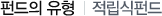
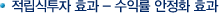
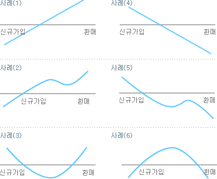

수익증권

적립식투자는 적금처럼 소액의 금액을 매월 일정하게 분산투자하여 적금의 안정성과 투자의 수익성을 적합한 새로운 형태의 상품입니다.
-
부담이 없습니다.
목돈이 없는 급여생활자에게 더욱 유리할 수 있습니다.
-
주식시장의 변동성 위험을 회피하면서 시장의 변화에 크게 얽매이지 않는 안정적인 선진 투자 방법입니다.
적립식 투자는 시장주기 전반에 걸쳐 투자함으로써 증권의 매입시기가 분산되기 때문에 주식이나 채권의�가격 변화로 손해를 볼 위험이 줄어들게 됩니다. 즉, 주가의 단기 등락에 따른 위험 부담을 최소화하는 상품입니다.
-
정액적립효과(Dollar Cost Average Effect)로 리스크를 분산할 수 있습니다.
적립식 분산투자로 증권의 평균매입단가를 낮출 수 있습니다. 정액적립효과란 매월 일정한 금액을 투자해 주가가 낮을 때는 주식을 많이 매입하고 주가가 높을 때는 상대적으로 적은 주식을 매입함으로써 평균 매입가를 평균 주가보다 낮춰 이익 극대화를 달성하는 방법입니다.

- 주식과 같이 가격 변동성이 큰 자산을 장기 적립식으로 투자하면 일시에 투자하는 임의식 투자에 비해 투자 수익률의 진폭을 크게 줄일 수 있으며 보다 안정적인 투자 수익률을 획득할 가능성이 높습니다.
- 적립식 주식투자가 이익을 내기 위해서는 평균주식매입단가 보다 투자만료 시점의 주가가 높아야 합니다. 투자만료 시점에서 주가가 상승한 사례 (1), 사례 (2), 사례 (3)의 경우에는 주식투자에서 이익을 낼 수 있습니다.
- 투자만료 시점에서 주가가 하락한 사례 (4), 사례 (5), 사례 (6)의 경우에는 주식투자에서 손실이 발생합니다. 그러나 사례 (4), 사례 (5)와 같이 주가가 지속적으로 하락한 경우에 적립식 투자는 임의식에 비해 손실 규모가 크게 줄어들게 됩니다.

장기 적립식 투자는 특수한 경우를 제외하고는 주식과 같이 가격 변동성이 큰 자산에 투자하여 상대적으로 안정적인 투자 수익률을 획득할 수 있는 좋은 투자 방법입니다.
-
장기 투자하라
적립식 펀드는 일정기간 돈을 나눠 투자하면서 주식이나 채권이 쌀 때는 많이 사고, 비쌀 때는 적게 사는 방식으로 매입단가를 낮춰 수익은 극대화하고 손실위험은 최소화한다. 때문에 주가가 폭등하거나 폭락할 경우 이를 견디지 못하고 중도에 포기한다면 기대효과를 얻기 어렵다.
-
적립금은 자동이체 하라
적립식 펀드의 장점을 살리려면 매월 일정하게 똑 같은 금액을 투자해야 한다. 그런데 은행이나 증권사를 늘 방문해야 하는 번거로움이 따른다. 이를 피하려면 자동이체하는 게 좋다.
-
등락이 분명한 펀드를 선택하라
적립식 펀드의 투자 효과를 충분히 얻으려면 주가가 오를 때 수익률이 올라주고 떨어질 때 같이 떨어지는 '확실한 성격'의 상품이 좋다. 주가가 떨어질 때 수익률이 같이 떨어져야 '싼값'에 많이 사게 되기 때문이다.
-
환매 타이밍도 중요하다
3년 이상 적립, 적립금액이 상당 수준 쌓인 상태에서 주가가 고점에 도달, 만기시점에 큰 폭의 하락이 예상된다면 중도해지하는 것도 방법이다. 반대로 만기 시점에 주가가 기대치를 밑돌 경우에는 주가가 오를 때까지 그대로 묻어두는 것도 좋은 방법이다.